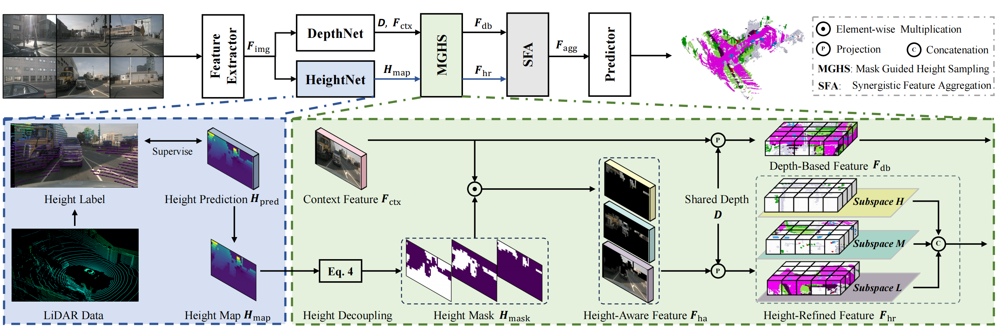
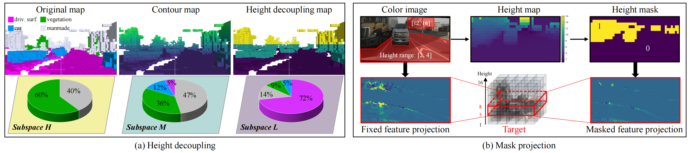
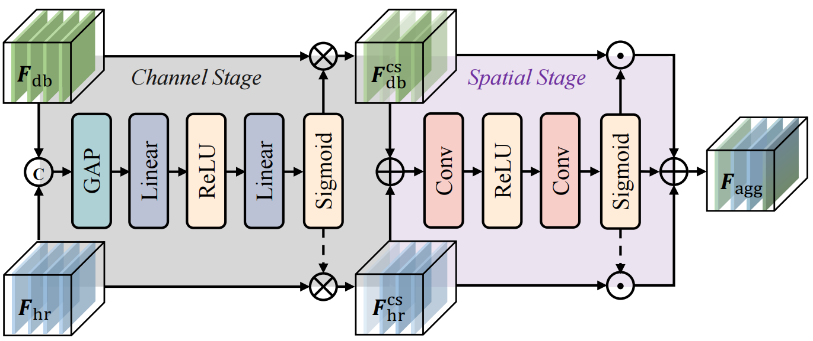

For the first time, DHD incorporates the height prior into the model through explicit height supervision, ameliorating the problem of feature confusion in the 2D-to-3D view transformation.
Abstract
The task of vision-based 3D occupancy prediction aims to reconstruct 3D geometry and estimate its semantic classes from 2D color images, where the 2D-to-3D view transformation is an indispensable step. Most previous methods conduct forward projection, such as BEVPooling and VoxelPooling, both of which map the 2D image features into 3D grids. However, the current grid representing features within a certain height range usually introduces many confusing features that belong to other height ranges. To address this challenge, we present Deep Height Decoupling (DHD), a novel framework that incorporates explicit height prior to filter out the confusing features. Specifically, DHD first predicts height maps via explicit supervision. Based on the height distribution statistics, DHD designs Mask Guided Height Sampling (MGHS) to adaptively decouple the height map into multiple binary masks. MGHS projects the 2D image features into multiple subspaces, where each grid contains features within reasonable height ranges. Finally, a Synergistic Feature Aggregation (SFA) module is deployed to enhance the feature representation through channel and spatial affinities, enabling further occupancy refinement. On the popular Occ3D-nuScenes benchmark, our method achieves state-of-the-art performance even with minimal input frames. Code is available at https://github.com/yanzq95/DHD.
Method

DHD. The feature extractor first acquires 2D image feature Fimg. Then, DepthNet extracts context feature Fctx and depth prediction D. HeightNet generates the height map Hmap to determine the height value at each pixel. Next, MGHS integrates D, Fctx, and Hmap for feature projection. Specifically, it decouples Hmap to produce height masks Hmask, which are utilized to filter the height-aware feature Fha from Fctx. Fha is projected into multiple subspaces to obtain height-refined feature Fhr. Besides it employs BEVPooling to encode Fctx into depth-based feature Fdb. Finally, both Fhr and Fdb are fed into the SFA to obtain the aggregated feature Fagg, which serves as input for the predictor.


Mask guided height sampling (MGHS). MGHS consists of two core processes: height decoupling (a) and mask projection (b). In (a), we decouple height into three subspaces based on height distribution statistics. In (b), the height mask is utilized to filter out redundant feature points, enabling precise 2D-to-3D view transformation.

Synergistic Feature Aggregation (SFA). The two-stage SFA is introduced to enhance the feature representation using channel and spatial affinities.
Quantitative Comparison

Visual Comparison

BibTex
@article{wu2024deep,
title={Deep Height Decoupling for Precise Vision-based 3D Occupancy Prediction},
author={Wu, Yuan and Yan, Zhiqiang and Wang, Zhengxue and Li, Xiang and Hui, Le and Yang, Jian},
journal={arXiv preprint arXiv:2409.07972},
year={2024}
}
Contact
For any questions, please contact {wuyuan,yanzq}@njust.edu.cn